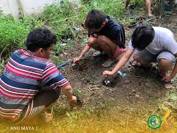
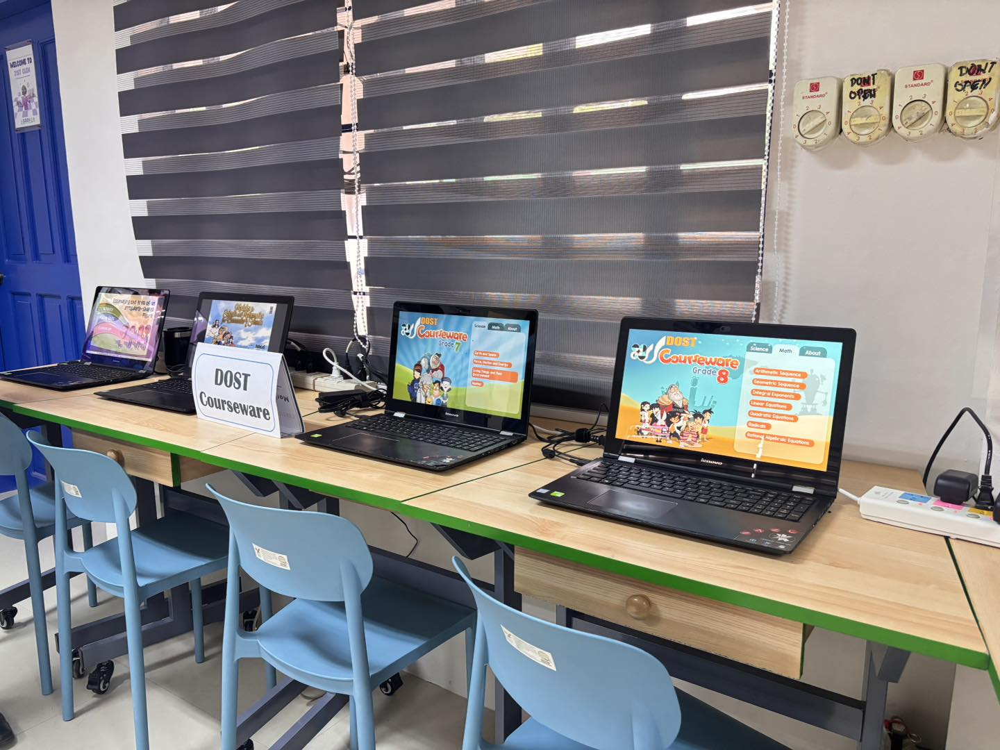

Local News
Road Improvement Project Begins in Mayamot
Local government starts infrastructure upgrade to ease traffic

The local government of Antipolo has officially started a road improvement project in Barangay Mayamot. The project aims to reduce heavy traffic and improve safety for pedestrians and motorists. Many residents have complained about narrow roads and damaged pavements over the past few years. The project includes widening certain road sections and repairing damaged areas.
According to city officials, the improvement project will also include better drainage systems. These upgrades will help prevent flooding during heavy rains. Construction is expected to last several months but will benefit thousands of daily commuters. Residents hope the project will improve travel time and road safety.
Barangay Clean-Up Drive Unites Residents
Community volunteers work together for a cleaner environment

Residents of Barangay Mayamot recently joined a community clean-up drive organized by local leaders. Volunteers gathered early in the morning to clean streets, canals, and public spaces. Students, parents, and barangay workers participated in the activity. The program aimed to promote environmental awareness and community cooperation.
Participants collected large amounts of plastic waste and other trash from public areas. Barangay officials reminded residents about proper garbage disposal and recycling. They also encouraged people to participate in future environmental activities. Community leaders plan to organize similar clean-up drives every month.
Youth Sports Program Launched in Mayamot
New program encourages young people to stay active

Barangay officials recently launched a youth sports program to encourage healthy activities among young residents. The program includes basketball tournaments, volleyball games, and fitness activities. Local leaders believe sports programs help keep youth active and away from negative influences. Many students eagerly registered to participate in the activities.
The program also promotes teamwork and discipline among participants. Coaches and volunteers help organize games and train players. Parents and community members support the events by attending matches and cheering for the teams. Officials hope the program will continue to grow in the coming years.
Tree Planting Activity Supports Environmental Protection
Students and volunteers plant trees in open areas

A tree planting activity was recently organized by local environmental groups in Barangay Mayamot. Students, teachers, and volunteers participated in planting seedlings in selected open spaces. The goal of the activity is to help improve air quality and increase green spaces in the community. Environmental advocates say tree planting helps fight climate change.
Participants planted dozens of young trees during the event. Organizers explained the importance of protecting nature and maintaining a healthy environment. Volunteers promised to monitor the growth of the trees and care for them regularly. Community members hope this project will inspire more environmental programs in the future.
Local School Introduces Digital Learning Tools
Technology helps improve classroom learning

A local school in Antipolo has started using new digital learning tools in classrooms. Teachers now use projectors, online resources, and interactive presentations during lessons. These tools help make learning more engaging and easier to understand. Many students enjoy the new teaching methods.
School administrators believe technology will help students prepare for future careers. Teachers are also receiving training on how to integrate digital tools into lessons. The school hopes to expand the program by adding more devices and resources. Parents have expressed support for the initiative because it improves the quality of education.